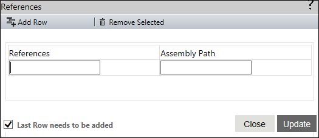

No
References Property Window
You can set the references for the script in the References property window.
To open this window, click the button for the "References" property. It displays the references in a grid. The grid contains a blank row where you can enter the parameters for new references.
The following image shows the References property window:

The References property window contains the following fields and tabs:
Enter the relative path, [INSTALLDIR]Bin\ as the assembly path to refer to the external assemblies that are referenced in script action and are available in the AVEVA Work Tasks installed Bin folder.
The following image shows the external assembly relative path: